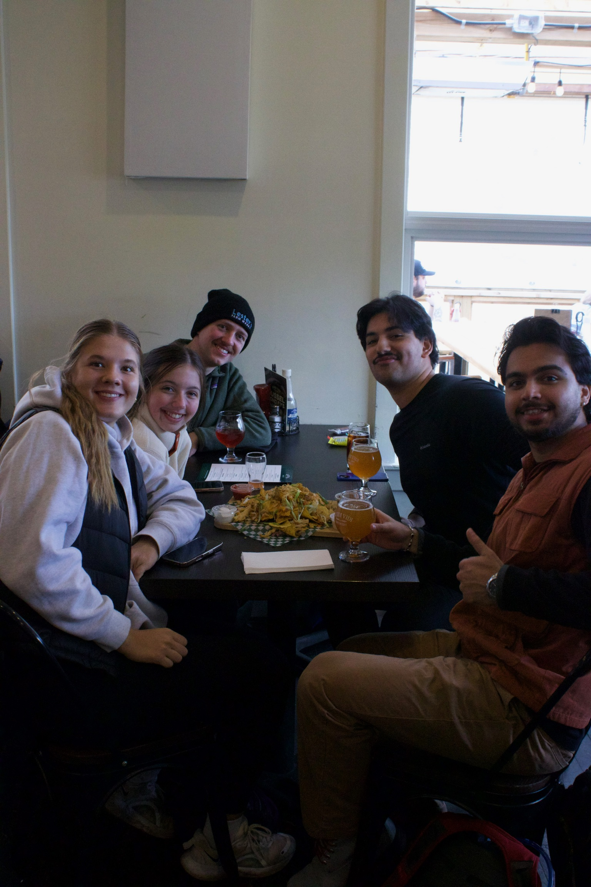

Explore. Connect. Discover.
Join the St. John's Hike Club and experience the breathtaking trails of Newfoundland with a vibrant community of outdoor enthusiasts!
Meet Our Dedicated Team

The St. John's Hike Club is powered by a passionate group of volunteers dedicated to sharing the beauty of Newfoundland's trails. From planning incredible routes to managing our community and outreach, each team member brings unique skills and enthusiasm to ensure every hike is a memorable and safe experience for everyone.
Learn More About Our Team
New to Hiking? Start Your Adventure Here!
Welcome to the world of hiking! It's an amazing way to explore Newfoundland's stunning landscapes, improve your fitness, and connect with nature. Here are a few tips to help you get started safely and enjoyably:
- Start Small: Begin with shorter, easier trails to build your stamina and confidence.
- Get the Right Gear: Comfortable hiking shoes, layers of clothing, water, and snacks are essential.
- Know Your Route: Always check trail maps and conditions before you go.
- Hike with a Buddy: It's safer and more fun to hike with someone, especially when you're starting out.
- Join a Group: Our club welcomes hikers of all experience levels! Joining a guided hike is a fantastic way to learn and meet new people.
Discover Hikes for All Levels
Relive Our Past Adventures
From rugged coastal paths to serene forest trails, we've explored some of the most beautiful spots in and around St. John's. Take a look at our past expeditions and get inspired for your next outdoor journey.
Browse Our Past Hikes
Connect With The St. John's Hike Club!
Whether you're looking for an active way to explore our province's natural beauty, connect with like-minded individuals, or contribute to local trail initiatives, the St. John's Hike Club offers something for everyone. Our hikes foster well-being, community spirit, and a deep appreciation for Newfoundland's incredible outdoors.
Are you a local business eager to support community health and gain visibility among outdoor enthusiasts? Partner with us! Becoming a sponsor offers unique benefits, helping us grow while showcasing your commitment to our vibrant community.
Get In Touch With Us